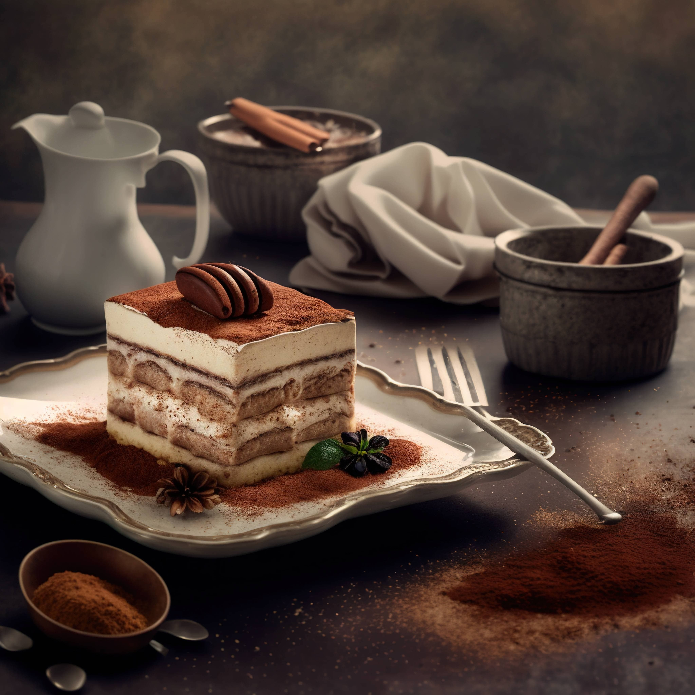

Hozzávalók
- Mascarpone
- porcukor
- tojás
- kávé
- rum
- babapiskóta
- holland kakaópor
Elkészítés
Lépésenként
- Először készítsd el a kávét, majd hagyd azt kihűlni szobahőmérsékletűre.
- Szétválaszd a tojásokat és válaszd el a fehérjét a sárgájától.
- A tojásfehérjéket verd habbá egy tálban, majd tedd félre.
- A tojássárgákat és a cukrot tedd egy másik tálba, majd keverd simára.
- Adj hozzá a mascarpone sajtot a tojássárgához és keverd jól össze, amíg egy homogén krémet kapsz.
- Óvatosan keverd hozzá a habbá vert tojásfehérjét a mascarpone krémhez. Vigyázz, hogy ne veszítsd el a levegőt a habból.
- Most jöhet a rétegezés. Egyenként mártsd meg a babapiskótákat a lehűtött kávéban, majd rétegezd az alján egy sütőtálba.
- Öntsd a fele mascarpone krémet a babapiskótákra, majd ismételten rétegezz be egy újabb réteg kávéban megmártott babapiskótát.
- Végül öntsd rá a maradék mascarpone krémet.
- Tedd a tiramisut a hűtőbe legalább 4 órára, hogy jól összeérjenek az ízek.
- Mielőtt tálalnád, szórd meg a tetejét kakaóporral a díszítéshez.
Jó étvágyat!

{kind=link}